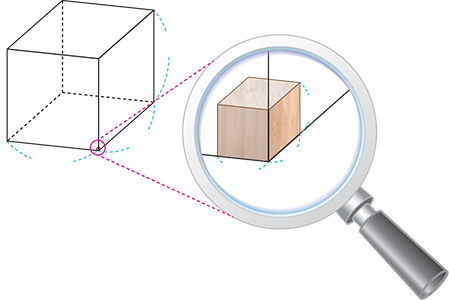
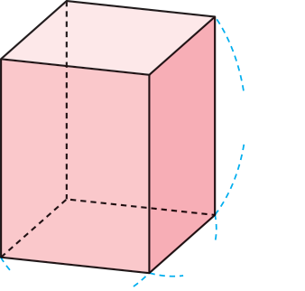

- 1
- 2
- 3
- 4
- 5
- 6
-
1 그림을 보고 안에 알맞게 써넣으세요.
1 m1 m1 m1 cm1 cm1 cm한 모서리의 길이가 1 m인 정육면체의 부피를(이)라 쓰고,1 m3(이)라고 읽습니다.1 세제곱미터
한 모서리의 길이가 1 m인 정육면체를 쌓는 데 부피가 1 cm3인 쌓기나무가개 필요합니다.10000001 m3＝cm31000000 -
2 직육면체를 보고 물음에 답하세요.
300 cm250 cm400 cm-
직육면체의 가로, 세로, 높이를 m로 나타내어 보세요.
- 가로
- m3
- 세로
- m2.5
- 높이
- m4
-
직육면체의 부피는 몇 m3인지 구해 보세요.m330
-
-
3 안에 알맞은 수를 써넣으세요.
3 m3＝cm330000002.5 m3＝cm3250000050000000 cm3＝m3504500000 cm3＝m34.5 -
4 부피가 큰 순서대로 기호를 써 보세요.
-
ㄱ2.7 m3
-
ㄴ950000 cm3
-
ㄷ한 모서리의 길이가 200 cm인 정육면체의 부피
-
ㄹ가로가 0.8 m, 세로가 3 m, 높이가 80 cm인 직육면체의 부피
,ㄷ,ㄱ,ㄹㄴ -
-
5 가로가 4 m, 세로가 2 m, 높이가 3 m인 직육면체 모양의 창고가 있습니다. 이 창고에 한 모서리의 길이가 20 cm인 정육면체 모양의 상자를 빈틈없이 쌓으려고 합니다. 정육면체 모양의 상자를 몇 개까지 쌓을 수 있나요?
20 cm4 m2 m3 m개3000 -
6 생활 주변에서 볼 수 있는 물건 중 부피를 m3 단위로 나타내기에 알맞은 물건을 찾아 그 물건의 부피를 구해 보세요.
 예
예물건 (가로)×(세로)×(높이)＝(부피) 냉장고 0.9×0.9×1.8＝1.458 (m3) 침대1.5×2×0.6＝1.8 (m3)에어컨0.4×0.3×1.8＝0.216 (m3)